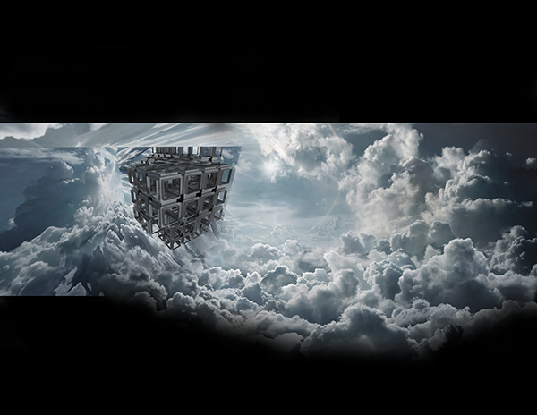

The time inverter would like to bend your perception of reality.
It will shift day-night circulation to give a chance to people who would like
to create their own calendar. The time inverter is a call to deny to obey the Sun.
The artificial environment is not inferior, it is beautiful and it can be
loved as much as the natural one.

The Museum of American Cartography With the collaboration of Alex Benkhe
Museum of American Cartography uses its masterplan as its facade to create speculation.
A familiar icon of American history is hidden in shape.
To create a doubt will be enough to reach the aim.
The image in Google Earth will reach out people,
more than the building itself. Secondly,
the plan schemas will confuse minds.
The building would like to surprise its visitors by acting like ancient,
despite it is not.
The Institute of Seeing
Institute of Seeing is dedicated to ‘show’. The building includes layers to frame the view,
which is inherited to the architecture.
All the sections of the building is designed to encourge looking to the sky or to the deep water.
There will be periscopes as well as telescopes.
It is nice to be able to see.
Non-functional Object
The non-functional object is a contemporary product with historical references.
Familiar components will be covered by unfamiliar ones.
When the audience is sceptical about the claim, the claim will succeed its aim.